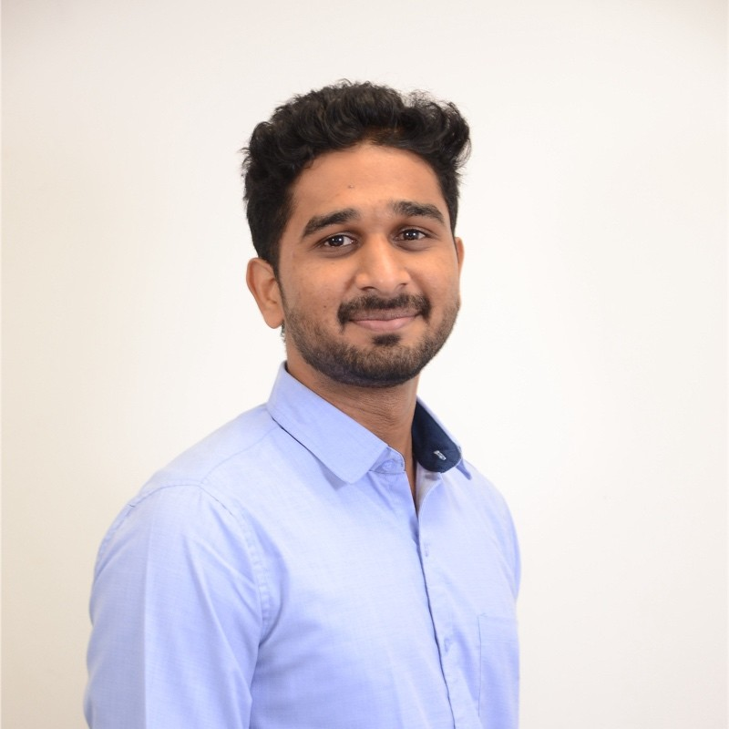
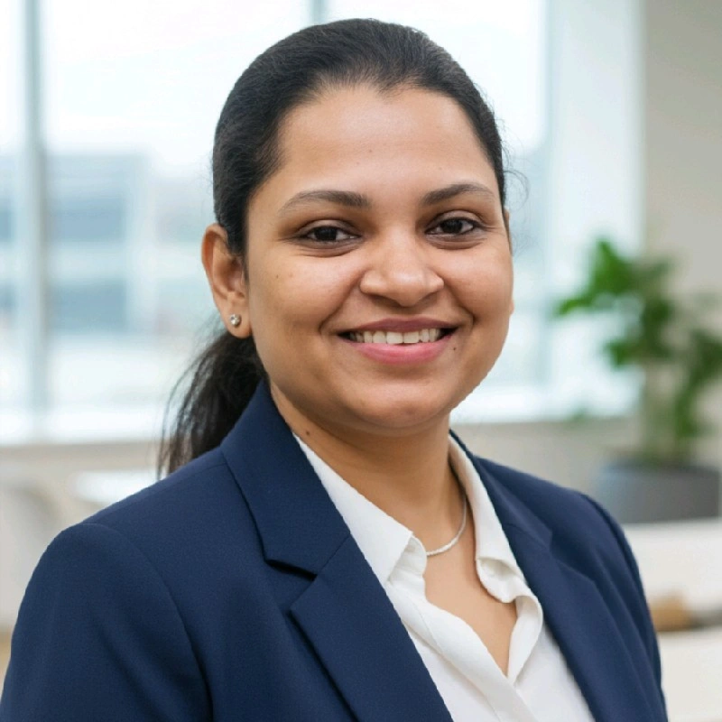
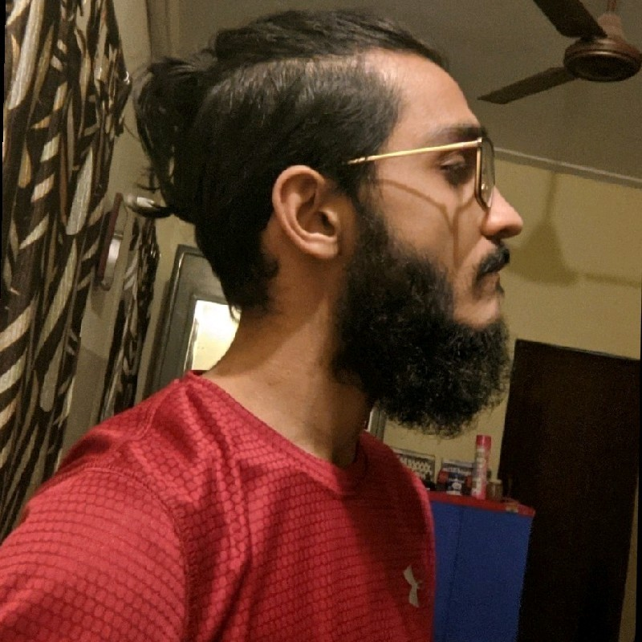

share my professional journey.. If you want to know my personally this not the place!
7+ years of experience as software developer
LinkedIn"Optimism is an occupational hazard of programming.. ...feedback is the treatment." – Kent Beck
Accomplished Software Developer with 7+ years of experience designing, developing, and optimizing scalable backend
systems. Expert in Java, Spring Boot, and cloud architectures. Proven track record in leading agile teams to deliver
secure, high-performance solutions for the financial and data sectors. Strong proficiency in relational database design,
cloud deployment, and cross-functional collaboration.
"Successfully led the development and deployment of a $60M
banking platform and a major stock market application serving a large user base. Adept at Agile methodologies, code
quality assurance, and stakeholder collaboration.

Suheil CI’ve worked with Tharani on a few projects, and one thing that always stood out was his ability to stay calm and focused under pressure. Whether we were troubleshooting last-minute issues or brainstorming ideas, he was always dependable and sharp. He’s great at what he does and brings a thoughtful, steady energy to the team. I learned a lot from working with him and wouldn’t hesitate to recommend him to any team looking for someone who gets the job done.

Somasundari ChandrasekaranTharani possesses exceptional skills in developing efficient and reliable software products. His strong logical thinking contributes to creating user-friendly solutions that are intuitive and easy to navigate. In addition to his technical expertise, Tharani's leadership and management abilities consistently inspire and motivate his team. He has been a valuable support both as a leader and as a mentor, making a positive impact on those he works with.

Abhay Ashok KumarTharani Kumar is a great colleague and a good friend of mine. One of his best qualities that I came across is his communication of ideas or explaining his thought process. His ideas and explanations are all communicated effectively. A great team player and always a learner. During programming collaborations, working alongside him was amazing. Logic discussions, design constraints and idea implementation discussions, all were very effective and impactful. Another quality is his attention to detail, so certain facts or statements or ideas that don't immediately strike, he is able to think about it and derive valuable conclusions and questions. All in all just an amazing person to work with. Highly recommended!